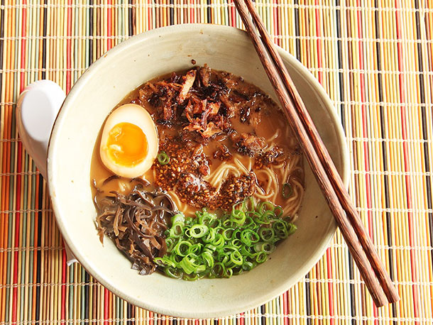

RAMEN!

Hi, I'm ramen. You may remember me from such bowls as "First Dish I Learned to Cook On My Own," the ever-popular "Morning After Peach Schnapps-Fueled College Dorm Room Party," "Don't Tell Mom The Microwave Is Dead," or, one of my more subtle, emotional works, "Oriental Flavor." Despite its popularity among the cash-strapped and the sodium-starved, the world or ramen extends far beyond the instant variety we grew up on. Originating in China, alkaline noodles served in soupy broth have been in Japan for well over a century, but like pizza in America, only became widespread after World War II. Troops returning from overseas had developed a taste for the stretchy noodles, and the inexpensive ingredients—wheat flour, bones, and vegetables—made them an attractive dish for restaurants to serve. Nowadays, ramen is high in the running for national dish of Japan. Museums have opened dedicated to its history. The instant ramen noodle was voted as the greatest Japanese export of the 20th century in a national poll (placing ahead of karaoke machines, walkmen, and Kurosawa films). And, just as with pizza in the U.S., regional styles and specialties abound with soups, noodles, and toppings, all varied according to local tastes, ingredients, and cultures. I'm not going to even pretend that a comprehensive style guide of all the ramen out there is possible, but we'll do our best to give you something to noodle over.